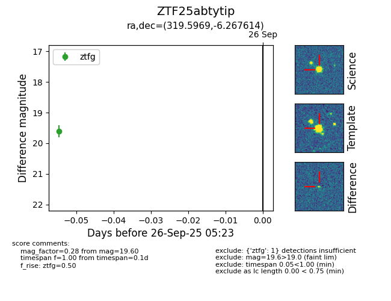

FINK: ZTF25abtytip
Lasair: ZTF25abtytip
ALeRCE: ZTF25abtytip
ZTF25abtytip (ztf,fink)
equatorial (ra, dec) = (319.5969,-6.26761)
galactic (l, b) = (45.2503,-35.37629)

last ztfg=19.60
1 ztfg detections